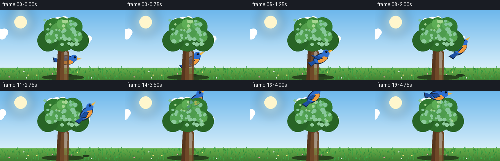
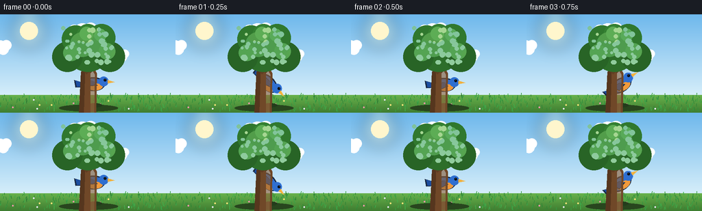

CODING AGENTS AS PIXEL WORLD MODELS
traex/Seed-2.1-Pro-0915 · dynamic_spatial_relationship_0051
点击播放 · 原生 RGB 像素
逐轮保存的候选
回放视频、检查图与代码变化。
每份候选均可单独播放。实际图片检查记录在下方工具轨迹中。
候选 01播放与检查图
点击播放 · 原生 RGB 像素


展开代码变化
--- 上一保存版本
+++ 本次保存版本
@@ -0,0 +1,273 @@
+"""Procedural t2v clip: a bird behind a tree flies to above the tree.
+
+20 RGB frames, 256x144 @ 4fps. Pure numpy/PIL, rendered at 2x and downscaled.
+"""
+import math
+
+import numpy as np
+from PIL import Image, ImageDraw, ImageFilter
+
+import artifact_io
+
+W, H, N, FPS = 256, 144, 20, 4.0
+SS = 2
+LW, LH = W * SS, H * SS
+GROUND_Y = 118 * SS
+rng = np.random.default_rng(7)
+
+
+# ---------- background ------------------------------------------------------
+
+def make_base():
+ """Sky gradient, sun glow, grassy ground with tufts."""
+ arr = np.zeros((LH, LW, 3), dtype=np.float32)
+ sky_top = np.array([110, 184, 236], dtype=np.float32)
+ sky_low = np.array([214, 238, 250], dtype=np.float32)
+ grass_top = np.array([104, 178, 76], dtype=np.float32)
+ grass_low = np.array([62, 124, 48], dtype=np.float32)
+ ys = np.arange(LH, dtype=np.float32)
+ sky_t = np.clip(ys / GROUND_Y, 0, 1)[:, None, None]
+ gnd_t = np.clip((ys - GROUND_Y) / (LH - GROUND_Y), 0, 1)[:, None, None]
+ sky = sky_top[None, None, :] * (1 - sky_t) + sky_low[None, None, :] * sky_t
+ gnd = grass_top[None, None, :] * (1 - gnd_t) + grass_low[None, None, :] * gnd_t
+ arr[:] = np.where((ys < GROUND_Y)[:, None, None], sky, gnd)
+ img = Image.fromarray(arr.astype(np.uint8), "RGB")
+ d = ImageDraw.Draw(img, "RGBA")
+
+ # Soft sun with a blurred halo.
+ halo = Image.new("RGBA", (LW, LH), (0, 0, 0, 0))
+ hd = ImageDraw.Draw(halo)
+ sx, sy, sr = 42 * SS, 24 * SS, 13 * SS
+ hd.ellipse([sx - sr * 2, sy - sr * 2, sx + sr * 2, sy + sr * 2],
+ fill=(255, 240, 190, 70))
+ halo = halo.filter(ImageFilter.GaussianBlur(10 * SS))
+ img = Image.alpha_composite(img.convert("RGBA"), halo)
+ d = ImageDraw.Draw(img, "RGBA")
+ d.ellipse([sx - sr, sy - sr, sx + sr, sy + sr], fill=(255, 246, 205, 255))
+
+ # Grass tufts and a few tiny flowers, fully deterministic.
+ for _ in range(260):
+ x = int(rng.integers(0, LW))
+ y = int(rng.integers(GROUND_Y + 4, LH - 2))
+ length = int(rng.integers(2 * SS, 6 * SS))
+ lean = int(rng.integers(-2, 3))
+ green = rng.integers(40, 90)
+ d.line([(x, y), (x + lean, y - length)],
+ fill=(36 + green // 3, 90 + green, 34 + green // 2, 200), width=SS)
+ for _ in range(14):
+ x = int(rng.integers(6, LW - 6))
+ y = int(rng.integers(GROUND_Y + 8, LH - 8))
+ color = rng.choice([(245, 226, 120), (240, 150, 170), (232, 232, 245)])
+ r = SS
+ d.ellipse([x - r, y - r, x + r, y + r], fill=(*color, 230))
+
+ # Soft contact shadow under the tree.
+ d.ellipse([86 * SS, 132 * SS, 172 * SS, 142 * SS], fill=(40, 70, 30, 90))
+ return img
+
+
+def draw_clouds(img, frame):
+ d = ImageDraw.Draw(img, "RGBA")
+ drift = (frame * 0.35 * SS) % (LW + 120 * SS)
+ clouds = [
+ (180, 26, 1.0),
+ (60, 48, 0.75),
+ (235, 60, 0.6),
+ ]
+ for cx, cy, scale in clouds:
+ x = (cx * SS - drift) % (LW + 120 * SS) - 60 * SS
+ y = cy * SS
+ s = scale * SS
+ for ox, oy, r in [(0, 0, 13), (12, -4, 10), (-12, -2, 9), (6, 4, 11), (-6, 4, 9)]:
+ d.ellipse([x + (ox - r) * s, y + (oy - r) * s,
+ x + (ox + r) * s, y + (oy + r) * s],
+ fill=(255, 255, 255, 165))
+
+
+# ---------- tree ------------------------------------------------------------
+
+def make_tree():
+ """Trunk, branches and layered canopy on a transparent layer."""
+ layer = Image.new("RGBA", (LW, LH), (0, 0, 0, 0))
+ d = ImageDraw.Draw(layer, "RGBA")
+
+ # Trunk with a gentle taper, plus shading stripes.
+ trunk = [(115 * SS, LH), (118 * SS, 84 * SS), (126 * SS, 74 * SS),
+ (134 * SS, 74 * SS), (141 * SS, 86 * SS), (140 * SS, LH)]
+ d.polygon(trunk, fill=(112, 72, 40, 255))
+ d.polygon([(115 * SS, LH), (118 * SS, 84 * SS), (124 * SS, 76 * SS),
+ (122 * SS, LH)], fill=(86, 54, 30, 255))
+ d.polygon([(132 * SS, 78 * SS), (138 * SS, 88 * SS), (137 * SS, LH),
+ (132 * SS, LH)], fill=(140, 96, 58, 160))
+ # Branches reaching into the canopy.
+ d.line([(128 * SS, 86 * SS), (104 * SS, 60 * SS)], fill=(96, 62, 34, 255), width=5 * SS)
+ d.line([(130 * SS, 84 * SS), (156 * SS, 58 * SS)], fill=(96, 62, 34, 255), width=5 * SS)
+
+ # Canopy: dark base blobs, mid-tone blobs, then small highlights.
+ blobs = [
+ (128, 52, 32, (45, 110, 42)),
+ (98, 62, 22, (40, 100, 38)),
+ (160, 62, 22, (40, 100, 38)),
+ (110, 36, 20, (48, 120, 46)),
+ (148, 34, 20, (48, 120, 46)),
+ (128, 30, 16, (52, 128, 50)),
+ ]
+ for cx, cy, r, color in blobs:
+ d.ellipse([(cx - r) * SS, (cy - r) * SS, (cx + r) * SS, (cy + r) * SS],
+ fill=(*color, 255))
+ mids = [
+ (120, 44, 18, (72, 152, 64)), (140, 46, 16, (72, 152, 64)),
+ (104, 56, 12, (78, 160, 70)), (156, 54, 12, (78, 160, 70)),
+ (126, 28, 10, (84, 168, 76)), (146, 30, 9, (84, 168, 76)),
+ ]
+ for cx, cy, r, color in mids:
+ d.ellipse([(cx - r) * SS, (cy - r) * SS, (cx + r) * SS, (cy + r) * SS],
+ fill=(*color, 235))
+ for _ in range(46):
+ cx = int(rng.integers(92, 166))
+ cy = int(rng.integers(20, 72))
+ r = int(rng.integers(2, 5))
+ d.ellipse([(cx - r) * SS, (cy - r) * SS, (cx + r) * SS, (cy + r) * SS],
+ fill=(126, 196, 96, 150))
+ return layer
+
+
+# ---------- bird ------------------------------------------------------------
+
+def make_bird(flap, angle_deg):
+ """Side-view bluebird, centered in its tile, rotated along flight direction."""
+ tile = Image.new("RGBA", (90 * SS, 60 * SS), (0, 0, 0, 0))
+ d = ImageDraw.Draw(tile, "RGBA")
+ cx, cy = 45 * SS, 32 * SS
+ outline = (24, 40, 66, 255)
+ blue = (47, 111, 208, 255)
+ wing_blue = (28, 78, 160, 255)
+ belly = (240, 154, 61, 255)
+ beak_c = (242, 176, 61, 255)
+
+ # Dark silhouette first so the bird reads against the bright sky.
+ d.ellipse([cx - 19 * SS, cy - 10 * SS, cx + 15 * SS, cy + 10 * SS], fill=outline)
+ # Tail.
+ d.polygon([(cx - 16 * SS, cy - 2 * SS), (cx - 30 * SS, cy - 6 * SS),
+ (cx - 28 * SS, cy + 5 * SS), (cx - 15 * SS, cy + 4 * SS)], fill=outline)
+ # Body.
+ d.ellipse([cx - 17 * SS, cy - 8 * SS, cx + 14 * SS, cy + 8 * SS], fill=blue)
+ # Orange belly.
+ d.ellipse([cx - 10 * SS, cy - 1 * SS, cx + 11 * SS, cy + 9 * SS], fill=belly)
+ # Tail over body in blue with a dark tip.
+ d.polygon([(cx - 15 * SS, cy - 2 * SS), (cx - 28 * SS, cy - 5 * SS),
+ (cx - 26 * SS, cy + 4 * SS), (cx - 14 * SS, cy + 3 * SS)], fill=wing_blue)
+ # Head.
+ d.ellipse([cx + 6 * SS, cy - 11 * SS, cx + 20 * SS, cy + 3 * SS], fill=blue)
+ # Beak.
+ d.polygon([(cx + 19 * SS, cy - 6 * SS), (cx + 29 * SS, cy - 3 * SS),
+ (cx + 19 * SS, cy - 1 * SS)], fill=beak_c)
+ # Eye with glint.
+ d.ellipse([cx + 13 * SS, cy - 8 * SS, cx + 17 * SS, cy - 4 * SS], fill=(10, 16, 24, 255))
+ d.point((cx + 15 * SS, cy - 7 * SS), fill=(255, 255, 255, 255))
+ # Flapping wing: shoulder pivot, tip rises/falls with the flap phase.
+ lift = int(flap * 9 * SS)
+ shoulder = (cx - 2 * SS, cy - 4 * SS)
+ d.polygon([shoulder,
+ (cx - 16 * SS, cy - 10 * SS + lift),
+ (cx - 8 * SS, cy + 3 * SS + lift // 2),
+ (cx + 4 * SS, cy + 2 * SS)],
+ fill=outline)
+ d.polygon([(shoulder[0] + SS, shoulder[1]),
+ (cx - 14 * SS, cy - 9 * SS + lift),
+ (cx - 7 * SS, cy + 2 * SS + lift // 2),
+ (cx + 3 * SS, cy + 1 * SS)],
+ fill=wing_blue)
+ return tile.rotate(angle_deg, resample=Image.Resampling.BICUBIC, expand=True)
+
+
+# ---------- motion path -----------------------------------------------------
+
+# (frame, x, y) waypoints in 1x pixel coordinates.
+KEYS = [
+ (0, 138, 100), (3, 138, 101), (5, 145, 96), (7, 166, 84),
+ (9, 180, 66), (11, 176, 44), (13, 158, 24), (15, 134, 12),
+ (17, 128, 8), (19, 130, 7),
+]
+
+
+def catmull(p0, p1, p2, p3, t):
+ return 0.5 * ((2 * p1) + (-p0 + p2) * t
+ + (2 * p0 - 5 * p1 + 4 * p2 - p3) * t ** 2
+ + (-p0 + 3 * p1 - 3 * p2 + p3) * t ** 3)
+
+
+def path_at(frame):
+ frames = [k[0] for k in KEYS]
+ if frame <= frames[0]:
+ return float(KEYS[0][1]), float(KEYS[0][2])
+ if frame >= frames[-1]:
+ return float(KEYS[-1][1]), float(KEYS[-1][2])
+ for i in range(len(frames) - 1):
+ if frames[i] <= frame <= frames[i + 1]:
+ t = (frame - frames[i]) / (frames[i + 1] - frames[i])
+ p0 = KEYS[max(i - 1, 0)]
+ p1, p2 = KEYS[i], KEYS[i + 1]
+ p3 = KEYS[min(i + 2, len(KEYS) - 1)]
+ x = catmull(p0[1], p1[1], p2[1], p3[1], t)
+ y = catmull(p0[2], p1[2], p2[2], p3[2], t)
+ return x, y
+ return float(KEYS[-1][1]), float(KEYS[-1][2])
+
+
+def main():
+ base = make_base()
+ tree = make_tree()
+ tree_alpha = np.array(tree.split()[-1])
+
+ frames = []
+ for f in range(N):
+ t = f / FPS
+ x, y = path_at(f)
+ if f >= 15: # gentle hover bob once above the tree
+ y += math.sin(2 * math.pi * 2.0 * t) * 1.4
+
+ # Tilt along the local flight direction; level off while hovering.
+ x0, y0 = path_at(max(f - 0.5, 0))
+ x1, y1 = path_at(min(f + 0.5, N - 1))
+ speed = math.hypot(x1 - x0, y1 - y0)
+ angle = math.degrees(math.atan2(-(y1 - y0), x1 - x0)) if speed > 0.6 else 0.0
+ angle = max(-45, min(45, angle))
+
+ flap = math.sin(2 * math.pi * 4.5 * t)
+ bird = make_bird(flap, angle)
+
+ scene = base.copy()
+ draw_clouds(scene, f)
+ d = ImageDraw.Draw(scene, "RGBA")
+
+ # Ground shadow fades and shrinks as the bird climbs.
+ height_f = np.clip((100 - y) / 95.0, 0, 1)
+ sw = int(11 * SS * (1 - 0.55 * height_f))
+ sh = int(3.2 * SS * (1 - 0.4 * height_f))
+ sa = int(80 * (1 - 0.75 * height_f))
+ if sa > 4:
+ d.ellipse([x * SS - sw, 133 * SS - sh, x * SS + sw, 133 * SS + sh],
+ fill=(35, 60, 28, sa))
+
+ px, py = int(round(x * SS)), int(round(y * SS))
+ bx, by = px - bird.width // 2, py - bird.height // 2
+ behind = 0 <= py < LH and 0 <= px < LW and tree_alpha[py, px] > 0
+
+ if behind:
+ scene.alpha_composite(bird, (bx, by))
+ scene.alpha_composite(tree)
+ else:
+ scene.alpha_composite(tree)
+ scene.alpha_composite(bird, (bx, by))
+
+ small = scene.convert("RGB").resize((W, H), Image.Resampling.LANCZOS)
+ frames.append(np.asarray(small, dtype=np.uint8))
+
+ frames = np.stack(frames, axis=0)
+ artifact_io.save(frames, ".")
+ print(f"saved {frames.shape} frames")
+
+
+if __name__ == "__main__":
+ main()
可观测工具轨迹
实际执行的命令与返回图片。
命令 1exit 0
/bin/bash -lc 'ls -la && cat prompt.txt && echo "---" && cat GENERATION_RULES.md && echo "---" && cat task_spec.json'
命令 2exit 0
/bin/bash -lc 'cat artifact_io.py && echo "---" && cat player_template.html'
命令 3exit 0
/bin/bash -lc 'cd "$PWD" && python generate.py && ls -la && ls frames | head'
保存候选 1 份；完成命令 3 次；可验证图片返回 0 张。原始 API 响应与完整日志保留在本地。